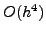
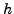

The approximation of the biharmonic operator by the finite element method requires either the use of continuous elements, or the reformulation of the original problem in mixed form to allow the discretisation by Lagrangian elements. We discuss an effective block preconditioner for the discretisation of the 2D biharmonic problem using bicubic Hermite finite elements. In this formulation each node is associated with four different types of degree of freedom.
The resulting linear system is symmetric positive definite with a condition number that behaves as  where  is the mesh spacing parameter. Therefore, the efficient solution of this linear system depend on the development of an effective preconditioner. Standard preconditioning techniques, including the "black-box" application of AMG to the whole coefficient matrix, do not produce an efficient solution. Reordering the linear system to group together the different types of degree of freedom leads to a natural blocking of the coefficient matrix. We present a block preconditioner, based on a form of block Jacobi preconditioning which is spectrally equivalent to the coefficient matrix. Some analytical results and computations of the spectrum of a preconditioned discrete operator reveal that its condition number remains small and bounded under mesh refinement.
We present an efficient implementation of this block preconditioner based on approximate inversion techniques (using matrix lumping and algebraic multigrid) for each of the diagonal blocks. Case studies demonstrate the robustness (with respect to changes in domain shape, mesh deformation and types of boundary conditions) and efficiency of this preconditioner for a variety of non-trivial test problems.